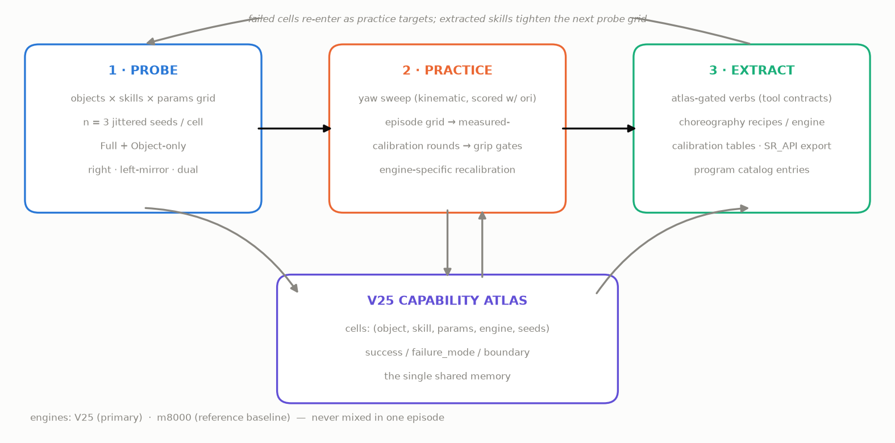
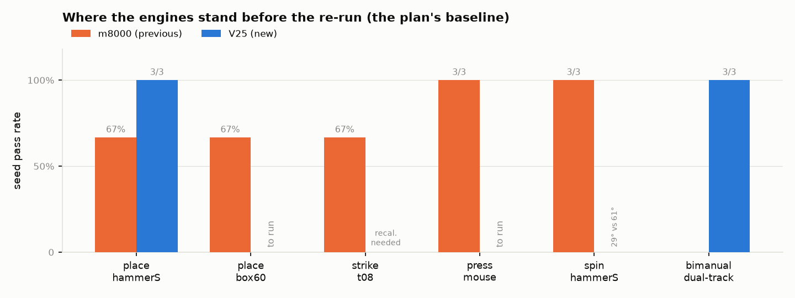
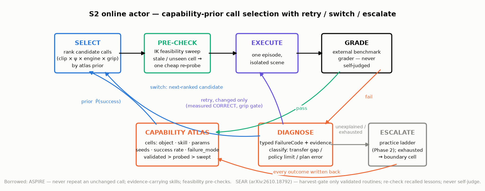
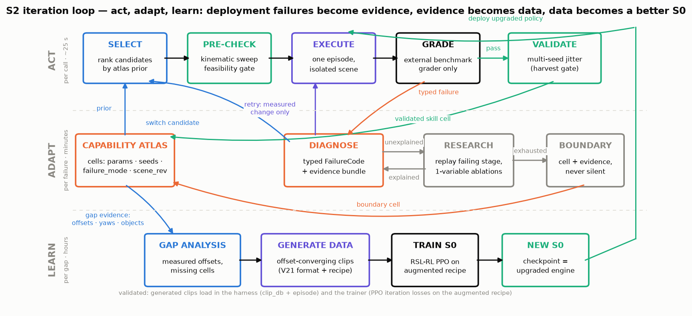

← dashboard · bimanual sims · campaign board
The m8000 cycle taught us where the old atlas was weak (n=1 cells, position-only feasibility, no seed validation) and gave us a deployment harness that runs ~20 s episodes at scale. This plan rebuilds the probe → practice → extract loop on V25 — now with a left mirror and a dual-hand stack — with the rigor fixes baked in from the start.

Checkpoint downloaded + SHA-verified · offline interface verify · native CPU rollout goldens · co-sim engine parity (place_hammerS 3/3 seeds under V25) · bimanual deployment sims 5/5 (right / left-mirror / dual shared-object, 100% frames within 5 cm/45°).

| axis | plan | rigor fix vs the old atlas |
|---|---|---|
| objects | 24 V21 objects (Local64 banks generated per object — builder validated) + the V25 release set after pull-forge-release v25 | bank coverage checked before any cell runs |
| skills × params | pick (12 yaws) · carry (4 dirs × 2 speeds) · spin (±90°, ±180°) · place-release · guarded-press; swing-strike for tool-class objects | reference clips gated by hold-plateau + wrist-speed trackability (the probes that end by placing back fooled the old selector) |
| seeds | n = 3 per cell (spawn jitter ±1 cm, ±8°) | the old n=1 cells produced zero-margin references that failed transfer |
| feasibility pre-sweep | kinematic yaw sweep per cell before any episode | scored on position AND orientation (position-only picked 43°-infeasible grasps) |
| modes / sides | Full + Object-only; right, left-mirror (12-object pick subset), dual (shared-object carry on bar-class, independent-object pairs) | bimanual cells are new — m8000 had no left/dual at all |
| embodiments | arm-mounted co-sim (primary, deployment-real) + native floating-wrist (per-cell reference ceiling) | the pair separates transfer gap from policy limit per cell |
| budget | ≈2,400 episodes ≈ 1–2 nights at 4 workers (20 s/episode) | pre-registered grid; counts fixed before results; isolated per-variant scenes (no cross-talk) |
The failure scaffolding serves one goal: a robust online actor. Before S2 calls a verb it ranks candidate calls (clip × ψ × engine × grip gate) by a capability prior from the atlas — validated multi-seed cells first, then native probe cells, then offline IK-sweep feasibility — and runs a pre-check: feasibility, plus one cheap re-probe for any cell that is stale or from a different scene/engine. Never a blind call.
On failure: typed FailureCode → auto-evidence (failure-tick render, tracking + contact traces, pre-contact offset, native-ceiling check) → classify (transfer gap / policy limit / plan error) → retry only with a measured change (CORRECT, grip gate — never repeat an unchanged call), or switch to the next-ranked candidate, or escalate to the practice ladder (yaw re-sweep → clip×ψ grid → calibration rounds → grip gates → task replans). Exhausted retries become boundary cells with the evidence bundle; every outcome is written back to the atlas the prior reads.

Borrowed, not improvised. ASPIRE-style: skill cells carry trigger + evidence (seeds, success rate, provenance); typed errors; feasibility pre-checks; "a failed attempt is not a blocked task — correct or switch, never repeat unchanged"; promotion only after independent reproduction. SEAR (Self-Evolving Agentic Robotics): harvest-gate — only externally-graded, multi-seed routines enter the prior (their self-built judges were wrong on 91% of rollouts); routines transfer, solutions don't (grip gates/choke/drop-aim are kept; per-object CORRECT is re-measured each scene); re-check recalled lessons — their loop never re-validated saved lessons, so errors persisted like skills. V25 targets unchanged: strike recalibration · spin ≥55° · cyl50/screw carry retention · bimanual block-present.
The failure scaffolding now closes all the way: boundary cells carry measured gap evidence (the exact pre-contact offsets and yaws where S0 failed), and S2 converts that into training data — V21-format reference clips whose approach starts at a failed offset and converges to the nominal grasp, plus a recipe. Validated end-to-end on box60: 4 gap-targeted clips generated from atlas evidence; they load in the harness (clip_db + a live episode) and the S0 trainer accepts the recipe (RSL-RL PPO iteration losses logged). A real capability run = mix the augment recipe into the V21 train set (hours; not launched).

Atlas-gated verbs — each S2 verb ships machine-readable preconditions from validated
cells (requests outside them return ATLAS_UNSUPPORTED) · choreography library — the
reusable recipes (place-release: above-rim/splay/lateral-retreat · choke-regrasp · swing-strike · press),
parameterized per engine with calibration tables · exports — SR_API-compatible wrappers and
ASPIRE program-catalog entries (reviewed SKILL.md recipes) · per-engine model cards — what works, at
what seeds, and the documented boundaries.
Acceptance for "extracted": 3/3 seeds on at least one object, a cross-object record, and an explicit boundary statement. No silent caps.
| deliverable | budget | |
|---|---|---|
| M1 | V25 core atlas: 24 objects × pick/carry/spin/place, n=3, both modes | 1–2 nights |
| M2 | campaign parity+: meet or beat every current board entry under V25 (incl. strike + spin recalibration) | 1 night |
| M3 | bimanual t08 official success (left block-present + right strike) + dual-carry demo | 1–2 sessions |
| M4 | skill library v1: gated verbs, recipes, calibration tables, SR_API export, final report | 1 session |
Grounded in: s2/dexharness (episode engine, search, validate), s0/v25 (engine + deployment), s2/ASPIRE (batch-validation pattern), the m8000 campaign results and their failure taxonomy.